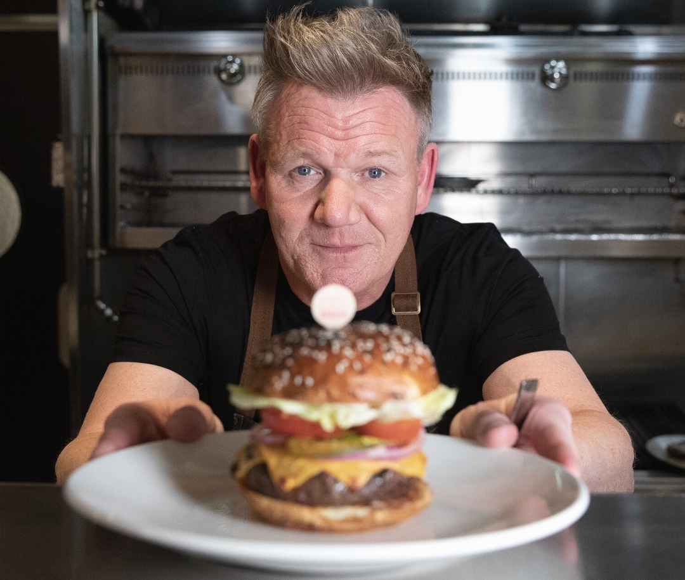

Szakácsaink
Ismerd meg kiváló szakácsainkat, akik napi szinten készítik számotokra a finom recepteket!

Gordon
58 éves
Specialitás: Magyar és mediterrán konyha
58 éves tapasztalattal rendelkező szakács, aki több étteremben is dolgozott már.
Mike
58 éves
Specialitás: Állasok és a csirke
"Fiatal", "innovatív" "szakács", aki a fenntartható gasztronómiában hisz.
Spencer
45 éves
Specialitás: Babgulyás
30 éve főző mester, aki a családi recepteket őrzi és fejleszti.
Tóth Gabi/Gábor?
? éves
Specialitás: Attól függ ▲
?????